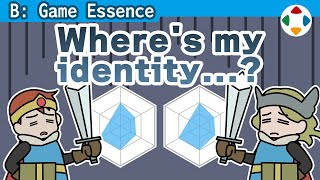
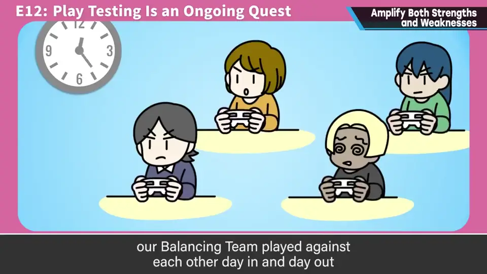
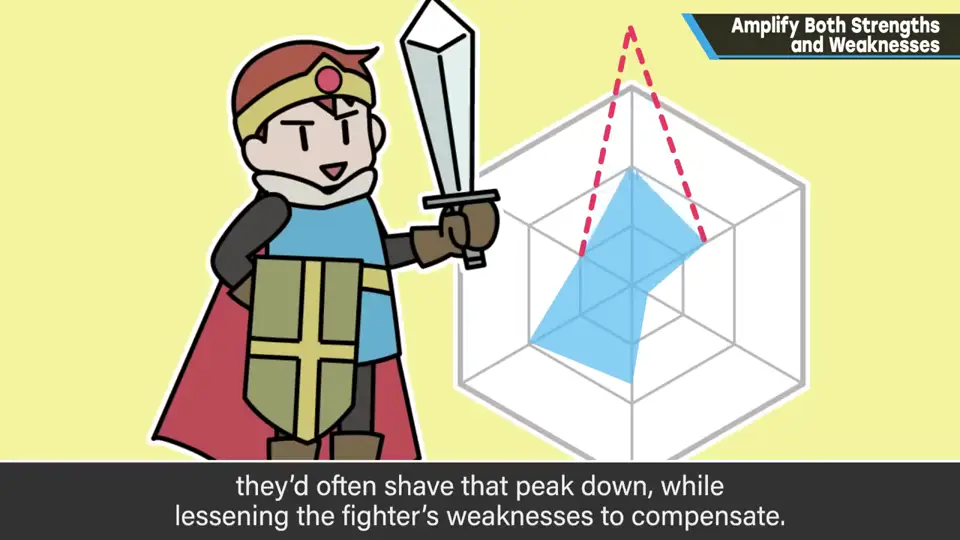
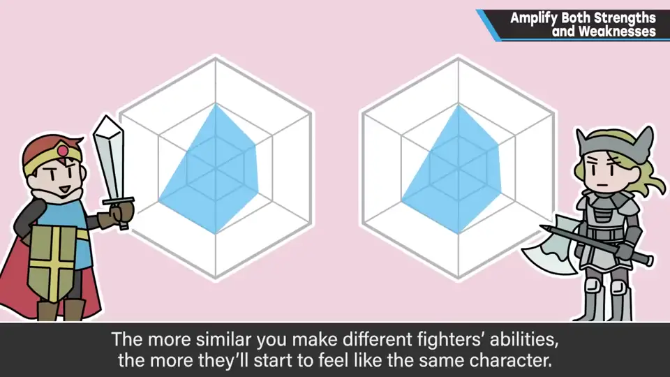
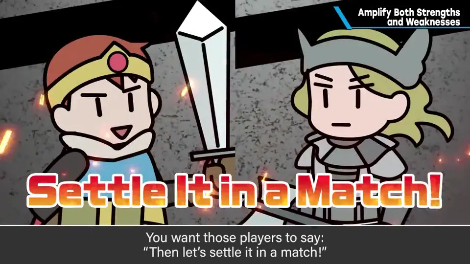
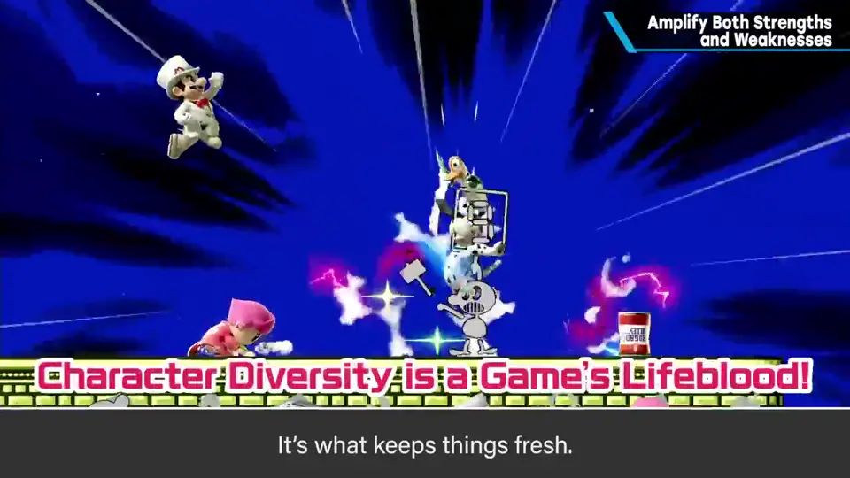
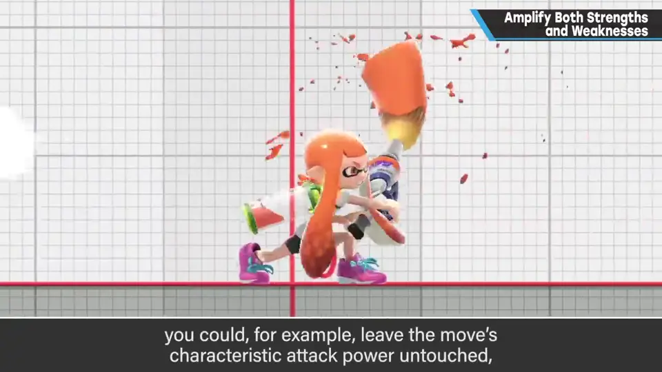
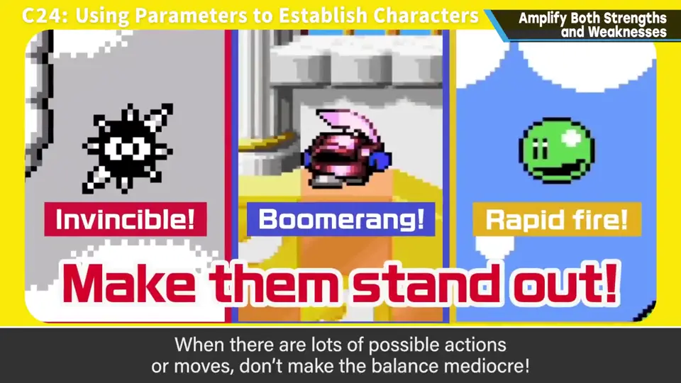

速览
这是平衡调整的话题。《大乱斗》的斗士平衡由平衡调整组每天反复对战，并参考网络对战胜率等数据来调整。其中常发生的是：某个强项太强时想削掉那座山，或反过来想填补短处。这理所当然，有时也不得不如此，但那是毁灭之路：斗士性能趋同，就接近同角色对战——这与从众多斗士中选了同一个人不同，而是游戏本身变得没有个性，单纯不好玩。樱井的游戏（包括《大乱斗》）以凹凸为好：各有强项也有弱项，有赞有否是理所当然的，甚至没有才麻烦。有人觉得 A 强、有人觉得 B 强，那就「用对战决胜负吧」——这就是那样的世界。因为社交媒体和回音室效应，偏见比以前传播得更广、更难做，但不能退缩：斗士的张弛就是游戏的活力，动态范围在可能的范围内应尽量大。单说一个攻击就有很多要素：不只是攻击力，还有发生速度、持续、收招（follow-through）长度、攻击判定大小、动作速度、击飞力、削盾、盾硬直等。不得不调整单个招式时，例如保留高攻击力这个个性，而加长收招破绽，或把判定缩小——调整方法很多。这虽是《大乱斗》的例子，但对没有对战的游戏也一样：可用的东西（招式等）很多时，平衡别做得平庸，正因为有凹凸、有差异，才会诞生自己喜欢的东西。
1. 削峰填谷是毁灭之路 0:03
《大乱斗》的斗士平衡，由平衡调整组每天反复对战，并参考网络等对战成绩来调整。其中常发生的是：某个强项过强时想削平那座山，或者反过来想填补短处。



这理所当然，有时也不得不这样做，但那是毁灭之路：斗士等的性能趋同，就接近同角色对战。这与从众多斗士中都选了同一个不同，而是游戏本身变得没有个性——单纯不好玩。
2. 以凹凸为好 0:56
包括《大乱斗》在内，樱井的游戏以凹凸为好：各有强项也有弱项，有赞有否理所当然，甚至没有才麻烦。有人觉得 A 强，有人觉得 B 强——那就用对战一决胜负吧。就是这样的世界。


因为社交媒体和回音室效应，偏见比以前传播更广，感觉更难做了，但不能退缩。对创作者来说，斗士等的张弛就是游戏本身的活力；动态范围应在可能的范围内尽量大。
3. 用其他参数来调整 1:37
单说一个攻击，就有很多要素：攻击力之外，还有发生速度、持续时间、出招前的速度、收招（follow-through）长度、判定大小、动作速度、击飞力、削盾和盾硬直等。
不得不调整单个招式时：例如保留高攻击力这个个性，而加长收招（后摇）破绽，或缩小判定——调整方法有很多。


这里因为易懂用了《大乱斗》的例子，但没有对战的其他游戏也一样。
自测题
1. 为什么樱井说「削强项、补短板」是毁灭之路？
性能趋同会接近同角色对战，游戏本身失去个性，单纯不好玩。 0:37
2. 樱井的游戏对平衡的态度是什么？
以凹凸为好：各有强弱、有赞有否是理所当然的，「觉得谁强就用对战决胜负」；动态范围尽量大，不因社交媒体的偏见退缩。 0:56
3. 不得不调整某个招式时，可以怎样做而不失个性？
保留个性（如高攻击力），改其他参数：如加长收招破绽、缩小判定；还有发生、持续、击飞力、削盾等许多要素可调。 1:53